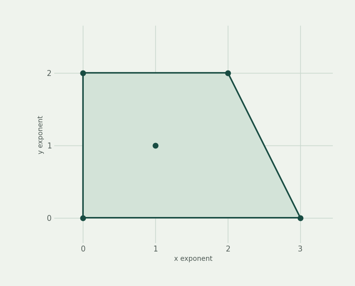

Macaulay2
Symbolic computations with Gröbner bases, initial ideals, and toric ideals.
Department of Mathematics · Texas A&M University
I’m a PhD student in mathematics working in enumerative algebraic geometry.
My PhD advisor is Professor Frank Sottile.

I’m interested in how the supports and symmetries of polynomial systems constrain the permutations of their solutions.
Symbolic computations with Gröbner bases, initial ideals, and toric ideals.
Numerical experiments with sparse systems, path tracking, and monodromy.
I serve as a teaching assistant for Engineering Calculus I recitations at Texas A&M University.